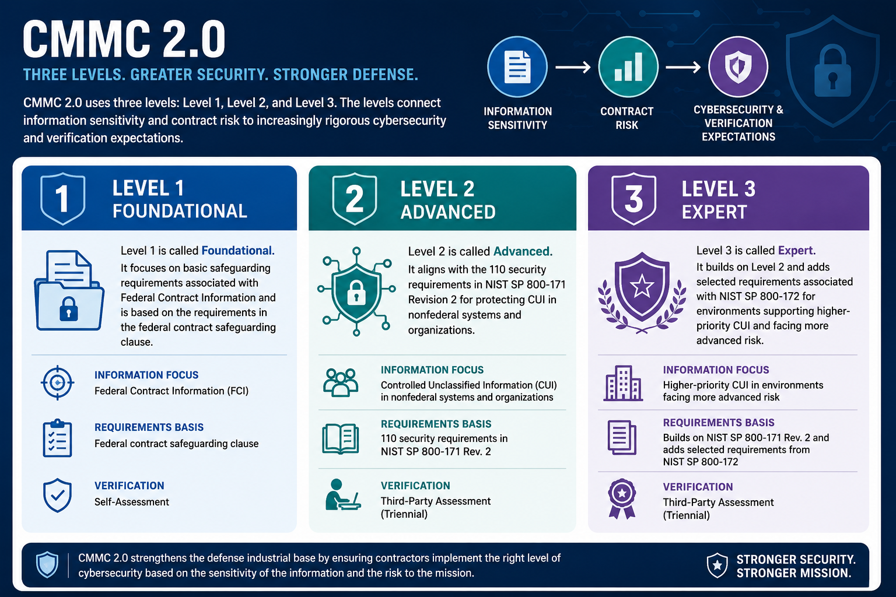

What Is CMMC 2.0?
The Three CMMC Levels
Connecting to LMS... Progress: in progress
Version 1.0 | Date: 2026-06-16 | Educational overview of CMMC 2.0 concepts.

Narration
CMMC 2.0 uses three levels: Level 1, Level 2, and Level 3. The levels connect information sensitivity and contract risk to increasingly rigorous cybersecurity and verification expectations.
Level 1 is called Foundational. It focuses on basic safeguarding requirements associated with Federal Contract Information and is based on the requirements in the federal contract safeguarding clause.
Level 1 uses self-assessment and affirmation mechanisms under the CMMC program. It is not a promise that risk has disappeared; the organization is representing that required practices are implemented within the applicable scope.
Level 2 is called Advanced. It aligns with the 110 security requirements in NIST SP 800-171 Revision 2 for protecting CUI in nonfederal systems and organizations.
Depending on the acquisition and contract, Level 2 may involve either a self-assessment or an assessment by an authorized CMMC Third-Party Assessment Organization. The solicitation and contract identify the required status.
Level 3 is called Expert. It builds on Level 2 and adds selected requirements associated with NIST SP 800-172 for environments supporting higher-priority CUI and facing more advanced risk.
Level 3 assessment involves the government assessment function defined by the CMMC program. An organization pursuing Level 3 must also satisfy the underlying Level 2 expectations for the applicable scope.
The practical lesson is not to choose a level based on preference or marketing language. Organizations should use current official requirements and the applicable solicitation or contract to determine the required level, assessment type, and timing.